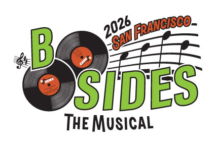

Adversary Village is a community initiative focused on adversary simulation/emulation, purple teaming, and adversary tradecraft. The village covers a wide range of topics, including offensive cyber security, threat/APT/ransomware emulation, breach and adversarial attack simulation, adversary tactics, research on nation-state-sponsored threat-actors, adversary intelligence, adversarial mindset and hacker survival skills.
Adversary Adventure is a Choose-Your-Own-Adventure model interactive game, where everyone can participate and choose various tasks. The participants can choose to play as an attacker who performs adversarial activities against a target, a defender who deals with a potential breach, as a CISO who is managing a ransomware attack, or even as management executives going through a table-top exercise.
This area will feature guided breach simulation exercises for participants to engage with. A simulated cyber range will be available for each scenario, providing an exact replica of an enterprise production environment. We will provide a detailed walkthrough of the attack scenarios, including Tools-Techniques-and-Procedures (TTPs) commands and how-to guides, demonstrating how to attack and breach the hospital's infrastructure or the office environment.
Adversary Simulator booth has hands-on adversary emulation plans specific to a wide variety of threat-actors and ransomware. This is a volunteer assisted activity where anyone, both management and technical folks can come-in and experience different categories of simulation, emulation and purple scenarios. Visitors will be able to view, simulate and control various TTPs used by adversaries. The simulator is meant to be a learning experience, irrespective of whether one is hands-on with highly sophisticated attack tactics or from the management.

Common Security Gaps in SMBs is a practical, real-world talk that breaks down the most common weaknesses small and mid-sized businesses struggle with, and why attackers love them. We’ll cover the “usual suspects” like weak identity and access controls, poor patching, misconfigured cloud services, insecure remote access, flat networks, lack of monitoring/logging, and missing backups/incident plans.
The goal is to give leaders and technical teams a clear checklist of what to fix first, quick wins that reduce risk fast, and how to build a simple security baseline without enterprise budgets.

We are no longer standing at the edge of the future. We are living inside it. Artificial intelligence, machine learning, and autonomous systems are reshaping power, labor, warfare, and identity. In a hyperconnected world where algorithms move faster than governments and data defines influence, humanity faces a defining question. Do we remain passive users of technology, or do we become active participants in our own evolution? Humanity 2.0 explores human augmentation as a path to maintaining sovereignty and relevance in an era increasingly dominated by intelligent machines. From implanted microchips and bio integrated security systems to brain computer interfaces and cognitive enhancement, this talk examines the convergence of biology and technology not as science fiction, but as an emerging reality. But augmentation without governance becomes vulnerability. As we integrate technology deeper into the human condition, a new frontier of risk emerges. Neural privacy. When thoughts, biometrics, and cognitive patterns become data streams, who owns the mind? Who secures it? What happens when the last domain of human sovereignty, the brain, becomes hackable? Drawing from lived experience at the intersection of cyber security, transhumanism, and digital ethics, Len Noe challenges audiences to rethink security beyond networks and endpoints. The next perimeter is the human nervous system.

The objective of the workshop is to provide hands-on activity in an integrated IT and OT scenario. Participants will have access to real scenario components and artifacts to perform adversary simulation exercises using TTPs associated with specific threat groups. Throughout the activities, we will correlate the techniques employed with the events observed in the environment.
Each exercise will represent a phase in the exploration of the scenario. At each stage, we will explain the vulnerabilities exploited, demonstrate how the attack unfolds, and map the actions to the MITRE ATT&CK framework.

A practical, hands-on session where participants actively engage in adversary and ransomware simulation exercises within a guided lab environment. Attendees will emulate real-world attack techniques, including initial access, lateral movement, and ransomware execution, while assessing defensive controls and validating detection and response capabilities. The session emphasizes realistic scenarios, structured operational workflows, and mapping activity to frameworks like MITRE ATT&CK to ensure measurable outcomes.
Participants will gain practical, hands-on experience executing each stage of the simulation themselves, ensuring they leave with repeatable methodologies and the confidence to apply them directly in their own environments.
Nine scenarios. Limited time. Familiar controls. Wrong choices cost you.
This is not about solving the problem. It’s about deciding what actually matters - before or during
it.
You’ll be given real-world situations across identity, access, devices, data, privacy, and AI. Each
one represents a failure point - something that looks normal until it isn’t.
The question is simple: What do you fix, and where does it actually make a difference?
A lot of options will look right. Not all of them are.
You’ll see 9 scenarios laid out. Each one describes a real failure. You’ll have a set of controls in
front of you.
Your job is to:
● pick what actually prevents or limits the damage
● assign it to the scenario
● and move forward
Some scenarios need one control. Some need a combination. Some are designed to make the
obvious answer look right when it isn’t.
You’ll see immediately what holds up and what doesn’t. You can adjust as you go, but the clock
is working against you.
Based on a live APT28 campaign reported in March 2026, this workshop reconstructs the full BadPaw/MeowMeow kill chain - from PNG steganography loader to multi-channel exfiltration - first through manual lab simulation, then as a continuous adversarial emulation campaign in SCYTHE. Participants leave with a repeatable validation methodology and concrete detection gap findings.
- Understand APT28's BadPaw/MeowMeow attack chain across 9 phases
- Reproduce post-compromise techniques in a controlled lab environment
- Map observed behaviors to MITRE ATT&CK with accurate TTP tagging
- Translate a manual lab exercise into a repeatable SCYTHE threat profile
- Read and act on a SCYTHE ATT&CK Coverage Report to remediate detection gaps
Sponsors
Security Risk Advisors (SRA) provides specialized security services including Penetration Testing, VECTR™ Purple Teams, Cloud Security, Resilience, Cyber Physical Systems Security, Engineering, and 24x7x365 Cybersecurity Operations. SRA’s mission is to “Level Up” every day to protect our clients and their customers. We deliver our security services to Fortune and Global 1000 companies, innovating technology startups, and mission-oriented non-profits. Our approach emphasizes knowledge transfer, collaboration, and strengthening security processes. SRA is a global company operating out of the United States, Ireland, and Australia.
Supporting Sponsors

miniOrange is a global cybersecurity company specializing in Identity and Access Management (IAM), Privileged Access Management (PAM), Identity Governance and Administration (IGA), Endpoint Management, and Data Privacy solutions. We provide enterprise-grade capabilities such as Single Sign-On (SSO), Multi-Factor Authentication (MFA), identity lifecycle management, and automated workflows to securely manage user access across cloud and on-premise applications. Our endpoint management solutions include Mobile Device Management (MDM) and Data Loss Prevention (DLP) to safeguard corporate devices and sensitive data. miniOrange also offers data privacy solutions, including consent management, data discovery, and compliance automation, helping organizations meet global privacy regulations. Over 25,000 enterprises worldwide trust miniOrange to protect identities, devices, and critical data.
Join Adversary Village official Discord server to connect with our amazing community of adversary simulation experts and offensive security researchers!